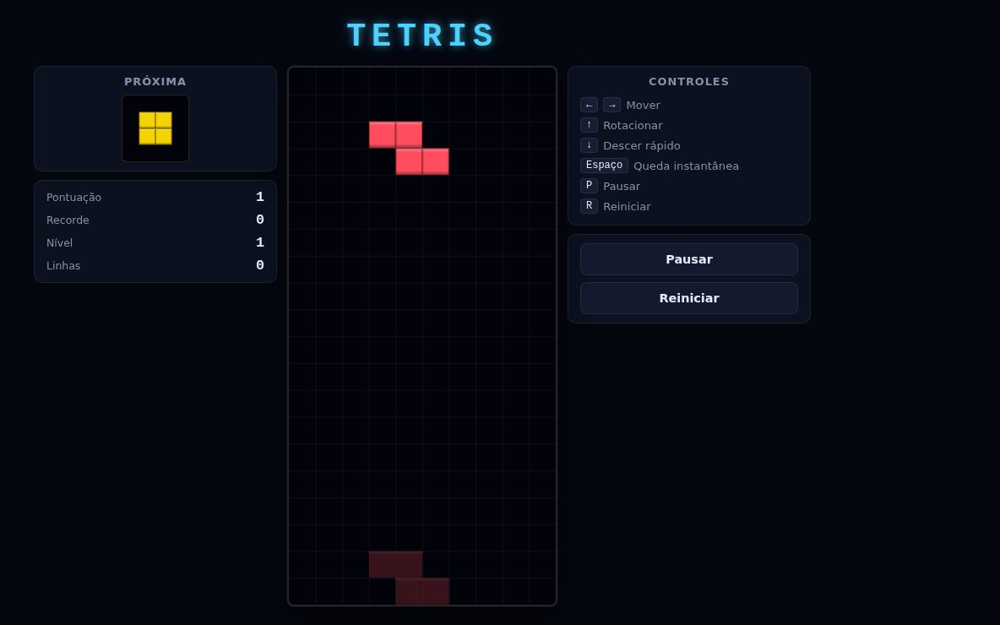
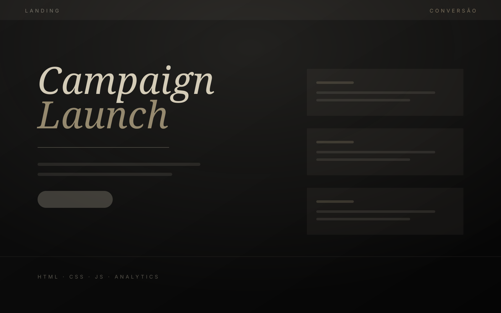
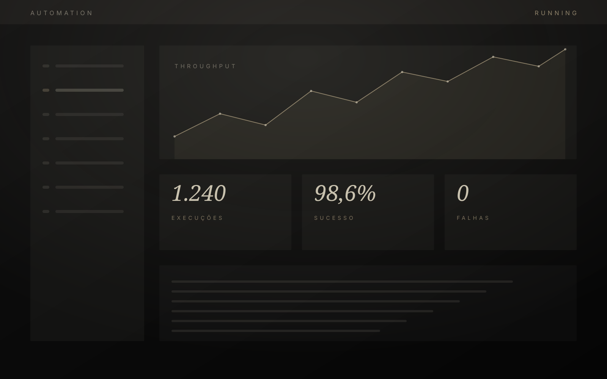

Frontend
Development
Interfaces construídas do zero, com atenção a tipografia, ritmo e movimento. Acessíveis, responsivas e fiéis ao design em qualquer tela.

Sou Davi Guedes, desenvolvedor web e especialista em automação. Trabalho na fronteira entre design e engenharia: interfaces que carregam rápido, back-ends que não quebram sob carga e rotinas automatizadas que devolvem horas de trabalho para quem contrata.
Cada projeto começa pela pergunta certa — o que este produto precisa provar? — e termina em código legível, versionado e pronto para escalar. Sem template, sem atalho, sem página que parece todas as outras.

2025
2025
2025Conversa, contexto e objetivo. Antes de qualquer linha de código, entender o que precisa acontecer depois que o site estiver no ar.
Estrutura, hierarquia e direção visual. Tipografia e espaço decidem o tom antes de qualquer efeito.
Código próprio, semântico e versionado. Componentes reutilizáveis, nada de peso morto herdado de template.
Performance, acessibilidade e SEO medidos — não presumidos. Ajuste fino até os números fecharem.
Publicação, monitoramento e acompanhamento. O lançamento é o começo da leitura de dados, não o fim do projeto.
Tecnologias: HTML5, CSS3, JavaScript, TypeScript, React, Next.js, Tailwind, GSAP, Node.js, API REST, SQL, Git, Webhooks, automação, SEO técnico e performance.
Entregou exatamente o que combinamos, no prazo, e ainda explicou cada decisão técnica em português claro.
A automação eliminou um trabalho manual que consumia várias horas por semana da equipe.
O site ficou rápido e com uma identidade que não parece com a de mais ninguém no nosso mercado.
Tem um projeto, uma ideia solta ou um processo que precisa parar de ser feito na mão? Conte o contexto — respondo em até 24 horas úteis.